| AZIMUT |
|---|
| AZIMUT | ABOUT | EVENTS | ZINE | CONTACT |
|---|
|
We are creatives. artists. space seekers. Our objective is to build community by creating a space for expression, connection, and support. We organize events, zines, and projects for sharing art and stimulation for creation. |
||
|---|---|---|
|
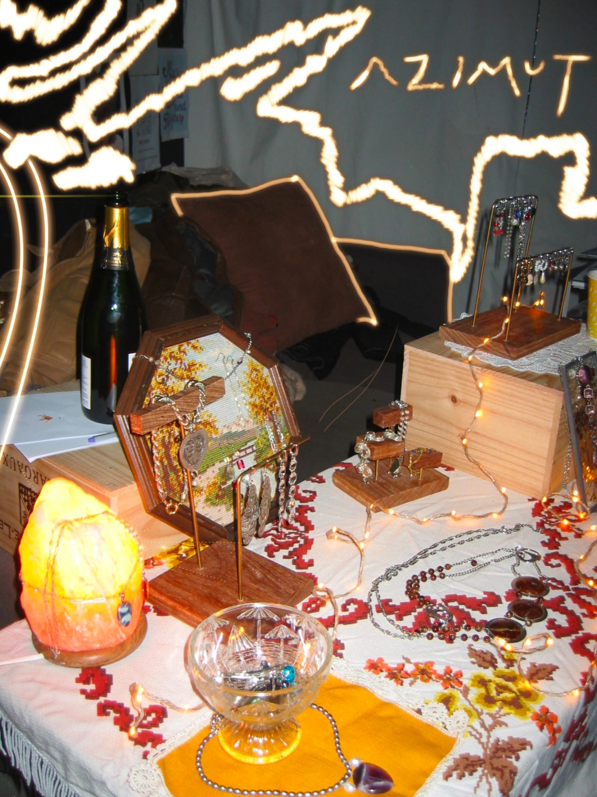
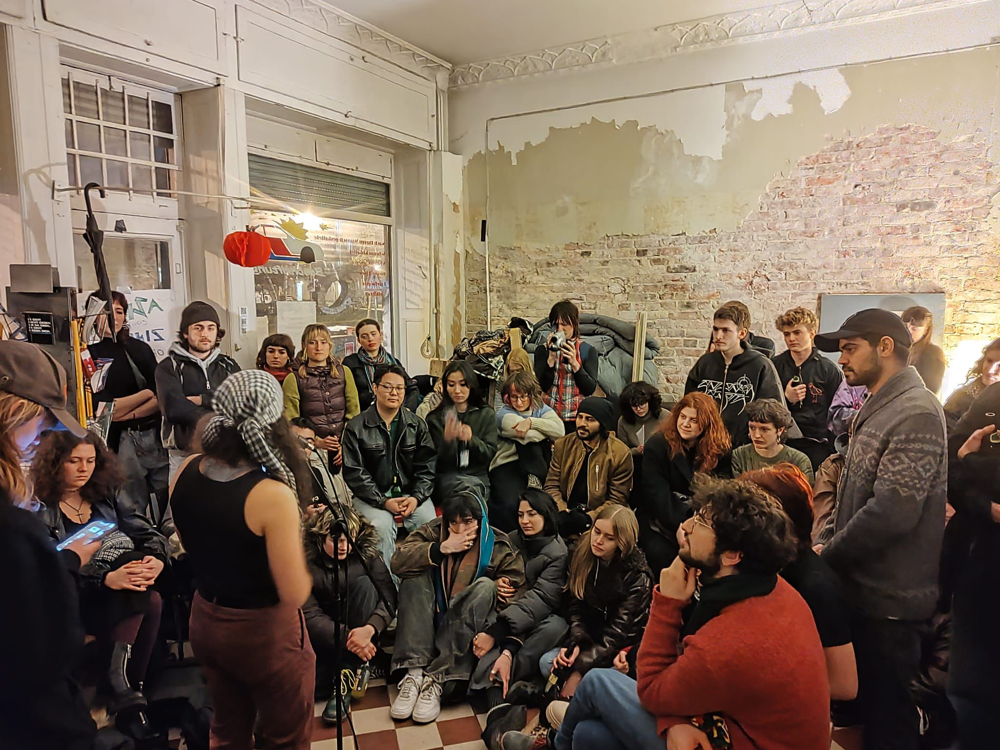
ZINE WORKSHOP, DECEMBER 2025 ☆
For December @Zönotéka temporarily transformed into a typical Christmas shop, a souvenir shop, where visitors can buy presents for their loved ones. However, through the exhibition and workshops another layer of the concept was revealed - by exploring traditions, material and symbolic legacies of European colonization. In this context, our Zine Workshop gave space to collectively discuss existing artworks that convey a certain colonial gaze, and more precisely the presence of exoticism in these - the fetishizing of non-western cultures, romanticizing and stereotyping the otherness. The aim of the workshop was to contest the stereotypes, to debunk them - and through a writing exercise, collages and visual rework - to deconstruct them. It aimed to encourage critical reflection and the importance of new narratives, culminating in a zine, a "gift" that participants could bring home.
PAST EVENTS
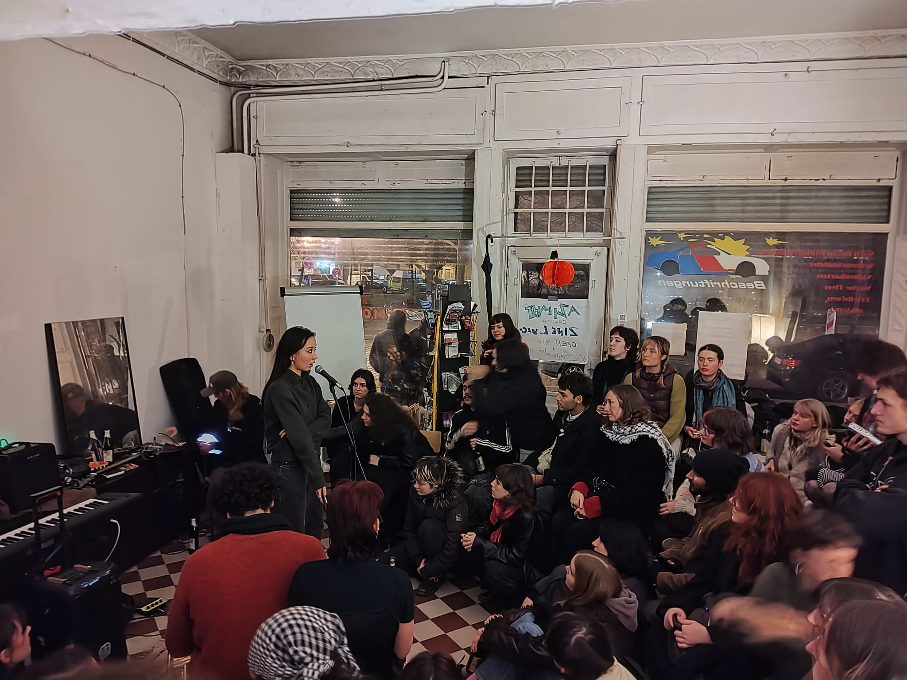 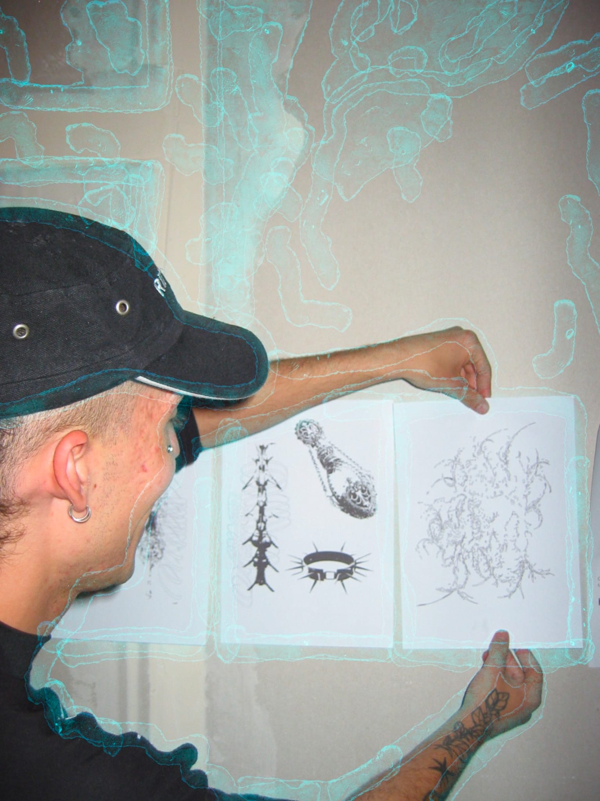 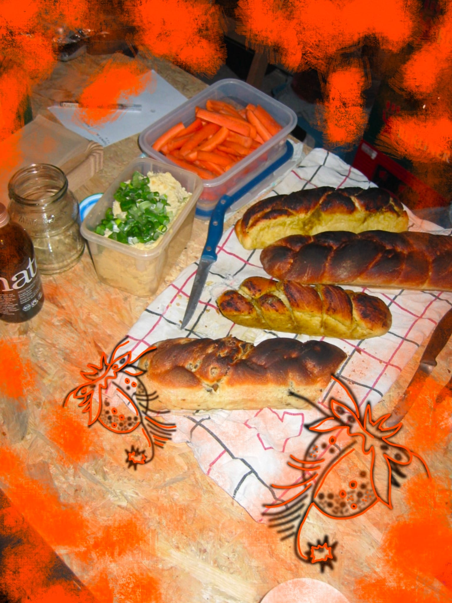 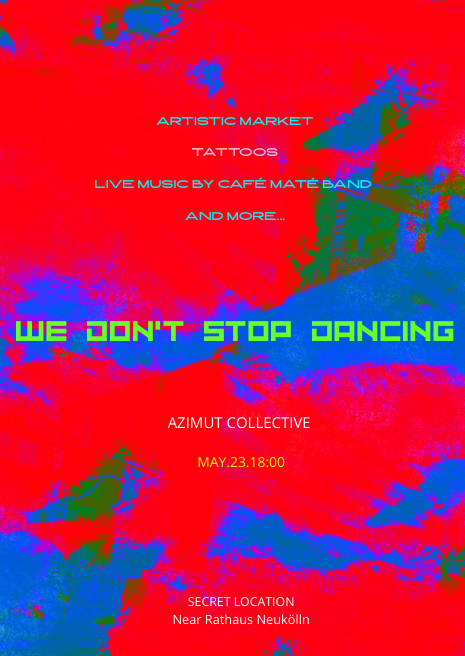 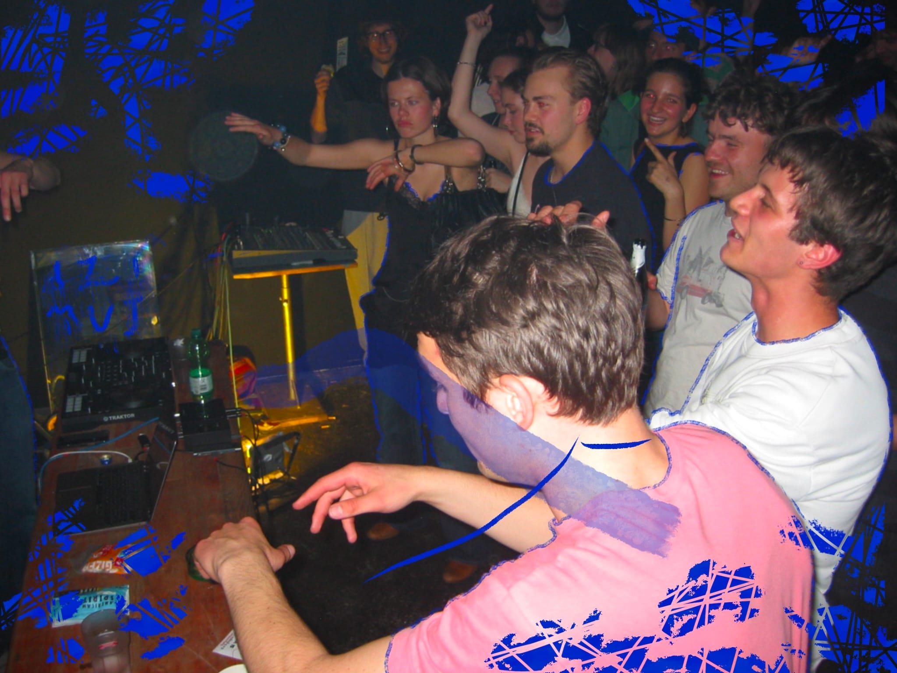 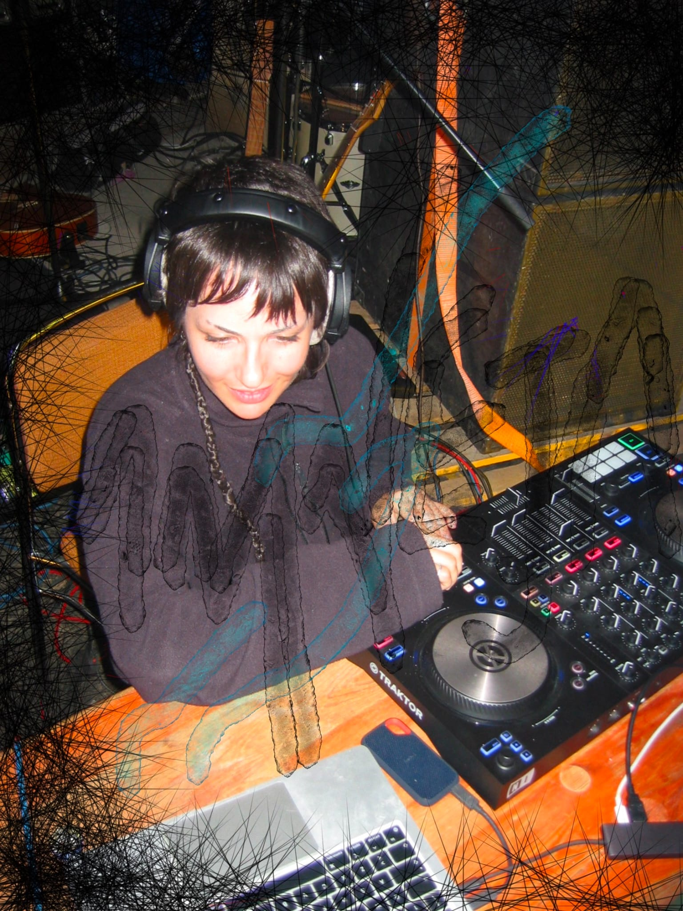 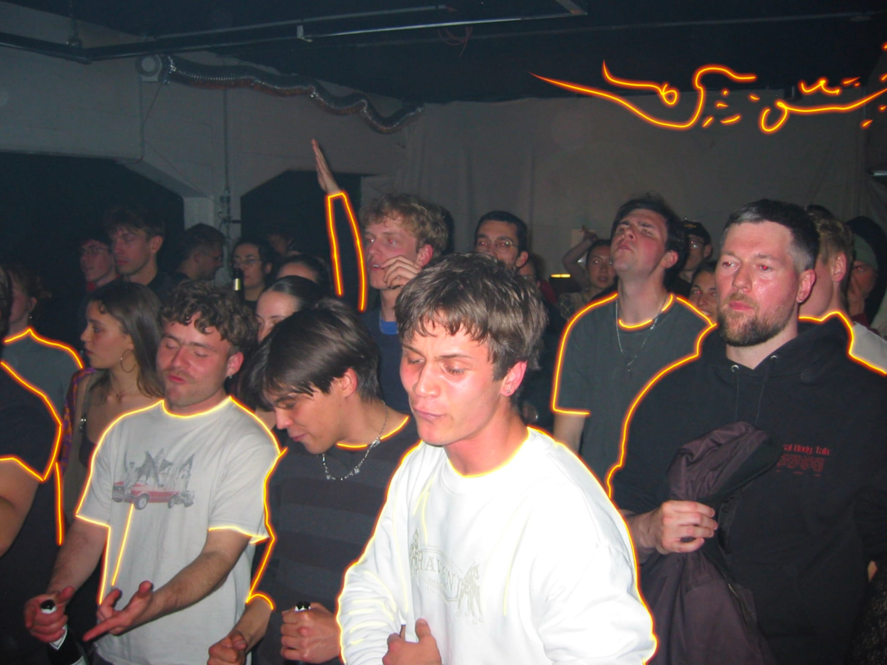 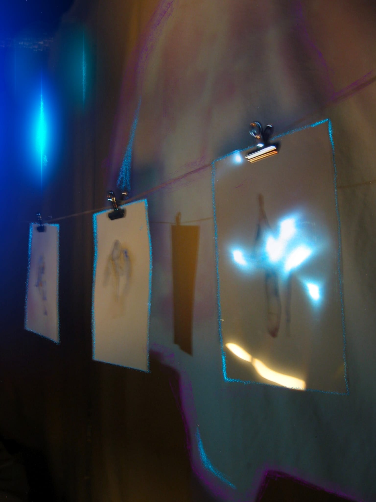 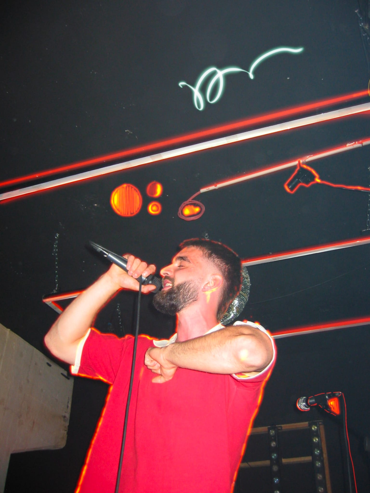 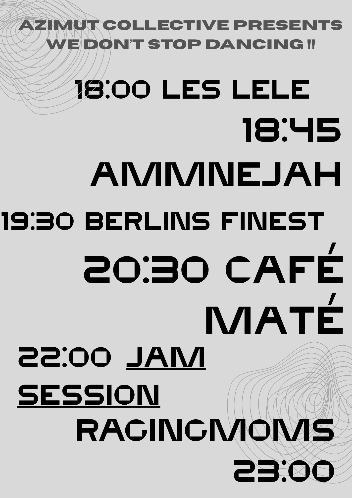 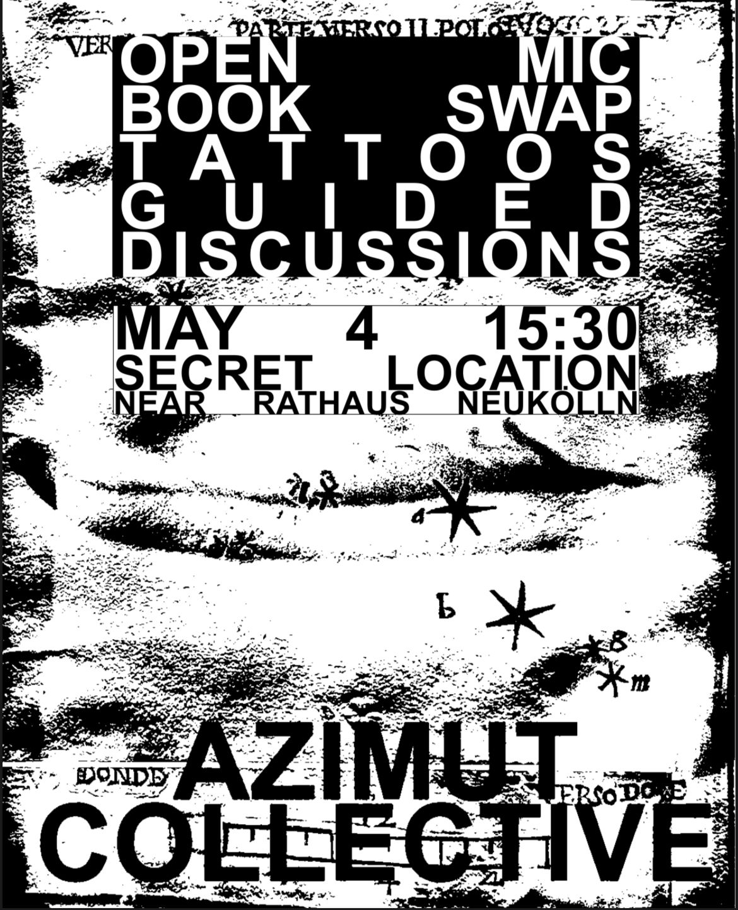 |
||
|
Workshop Zines: Zonoteka ☆
Collective Zine 2: 2025 ☆
Collective Zine 1: 2024 ☆
|
Guided discussion 04.05.2025 ☆
What makes a community
Q: What is our relationship to animals living around us in the city
R: I opened the door of my apartment and a fox was there staring at me, I didn't expect it. I felt like, what is it doing here, but it could have also thought that about me.
Q: How has living in a highly individualistic society changed us
R: I worry sometimes that all of my actions are only to benefit myself, I want to do things just to be kind and need nothing in return. R: Even doing things that benefit yourself can help everyone, we can be kind intuitively.
Q: What obstacles do you face contributing to communities that you want to support
R: It's not so easy, with working and feeling burnt out at the end of the day. It's hard to maintain even small communities like a group of friends, but it's a start.
Q: How much of your day do you spend contributing to communities that you desire to be apart of
R: Maybe one solution is to focus on the hyper local, talking to your neighbors and the people you see on the train, the people around, it can be nice to be known, even just in the park next to your apartment.
|
CONTACT
telegram channel: https://t.me/+1ItG6ztR5xg4M2M0 email: azimutcollective@gmail.com |